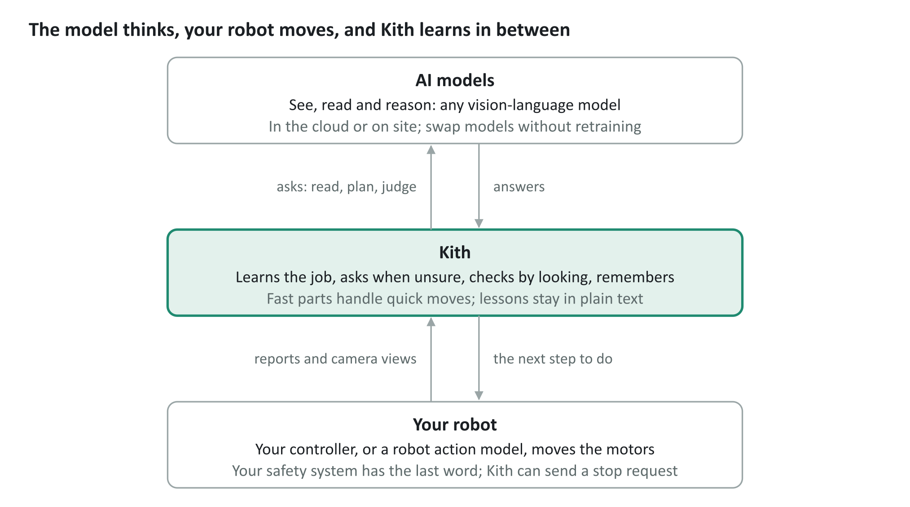
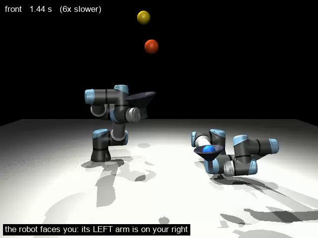

Teach new skills
Not just new combinations of old ones. Kith tunes each skill to move smoothly and efficiently on your hardware.
Teach · Practice · Check · Remember
Kith, from KHUB.ai, is a cognitive operating system: a mind for any kind of robot or drone.
Makers teach Kith by talking to it, giving it manuals, and letting it practice.
We don't build robots. We make Kith first for small and medium robot and drone makers, and we work closely with them to build smart, useful robots and drones together.
Why makers should do the teaching. You know your customers, the jobs your robots are bought for, and the places they work; an AI company far away does not. So the people best placed to teach a robot its jobs are you, and then your customers. That is why Kith is a partnership: we build the mind, you teach it your products' jobs, and your customers teach it their own places.
Where Kith is today. Kith is a very young product. So far it has been proven on a few examples, and it is not yet plug-and-play. We are moving quickly to prove it on real robots, with real cameras, in the real world, and we are looking for design partners to do that with us.
Not just new combinations of old ones. Kith tunes each skill to move smoothly and efficiently on your hardware.
Teach with the manuals, drawings and videos you already have. Kith turns them into plain steps and shows them back to you.
When something is unclear, Kith asks, and keeps your answers as lessons you can read and correct.
Kith checks each step by looking and practices until the job is done well. No data to collect, and you can change AI models without retraining anything.

A general vision-language model does the thinking, but it is too slow to drive motors, so it never sits in the real-time loop. Kith turns its plan into a program of small steps, builds small fast parts for anything that must happen quickly, and checks each step with the robot's cameras and sensors. Your robot's own controller moves the motors and keeps it safe.

Two simulated robot arms learned to juggle three balls from a one-sentence task, practice, and plain advice from a human coach who could not juggle. No AI model was fine-tuned. What one arm learned carried over to a second arm, giving it a head start.
A Kith-enabled basic drone could be taught to check gutters, check a house while its owners are away, or keep squirrels off the fruit trees. Each job can become a new product line or add-on, taught rather than coded.
Kith brings the AI, so you don't need to hire AI experts, collect data or train models. Its core already knows the everyday world: say “check the gutters,” and it most likely knows what a gutter is without being shown. When it doesn't know something, it asks.
Your customers can teach their robots their own places and jobs, and the robots keep improving with practice, long after the sale.
Your robots get a mind that people can teach, without you building your own AI, so you can compete on what you do best: the hardware, and knowing your customers.
Use any leading AI model, in the cloud or on site, and switch when a better one comes along. Kith can run on your customers' own sites, so their data stays with them.
Leading robot AI companies make robots smarter by training large models of their own, for large partners and teams of AI engineers. Kith is built for makers who have neither. It lets you teach your robot better motion with words and practice, without you training any model. And as an early design partner, you help shape what Kith becomes, a say that the big AI companies rarely give a small maker.
Kith works with these companies, not against them: their models can move the robot, while Kith is the mind that you teach to control them. Like a chip foundry that serves many chip designers, we make no robots of our own: we win when our makers win.
We build the mind, but that is only half of the picture: makers are the other half. We invite every maker with the ambition to build smart, practical robots to join us.